Group-level Page Behavior Analysis
Input: /Users/lianghuiyang/Desktop/Project Space/Collaborative-AI-Data-Analysis/page_behavior/page_behavior_preprocessed.csv
1) Descriptive statistics (group means)
| Type |
mean |
sd |
n |
| AI |
23.987963 |
13.854311 |
12 |
| NoAI |
19.739815 |
11.130155 |
12 |
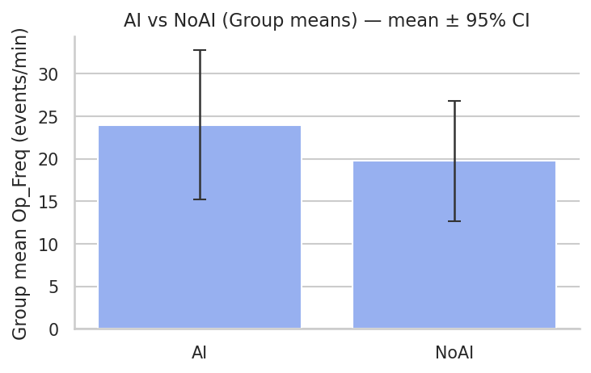
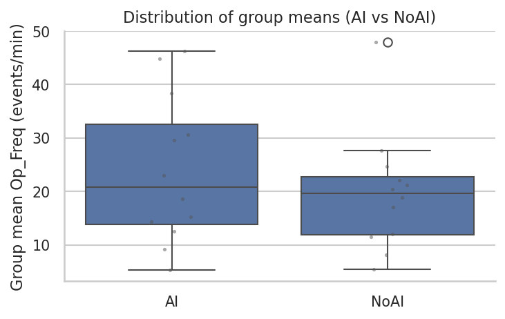
2) Normality test (Diff = AI - NoAI)
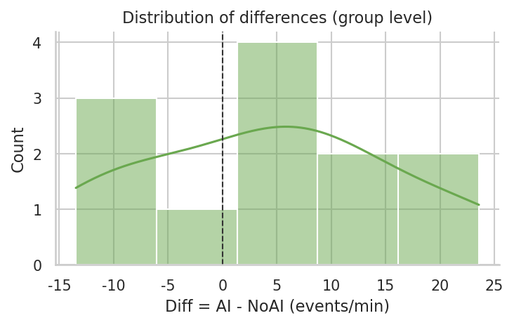
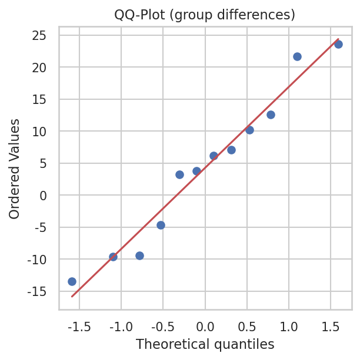
3) Paired test and effect size
| test |
stat |
p |
mean_diff |
ci_lo |
ci_hi |
dz |
dz_ci_lo |
dz_ci_hi |
n |
| t-test |
1.232645 |
0.243404 |
4.248148 |
-3.337257 |
11.833553 |
0.355834 |
-0.225006 |
1.075376 |
12 |
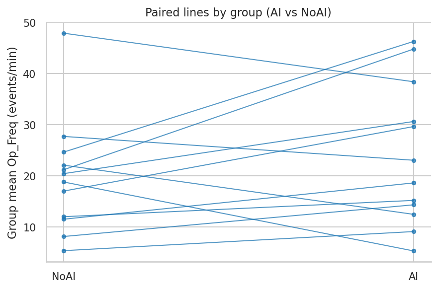
4) Within-group balance (Gini & CV)
4.1 Gini coefficient
| Type |
mean |
sd |
n |
| AI |
0.223529 |
0.107571 |
12 |
| NoAI |
0.252272 |
0.095948 |
12 |
| test |
stat |
p |
mean_diff |
ci_lo |
ci_hi |
dz |
dz_ci_lo |
dz_ci_hi |
n |
| t-test |
-0.687804 |
0.505821 |
-0.028743 |
-0.120719 |
0.063234 |
-0.198552 |
-0.754565 |
0.499343 |
12 |
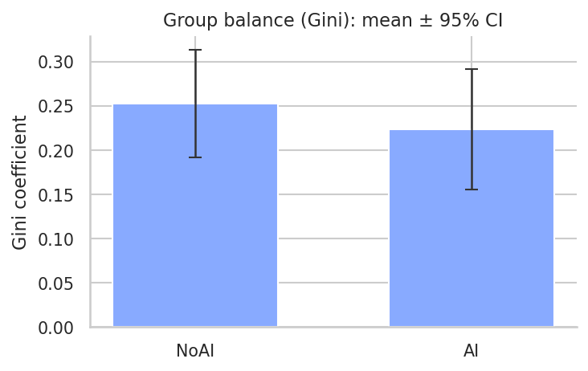
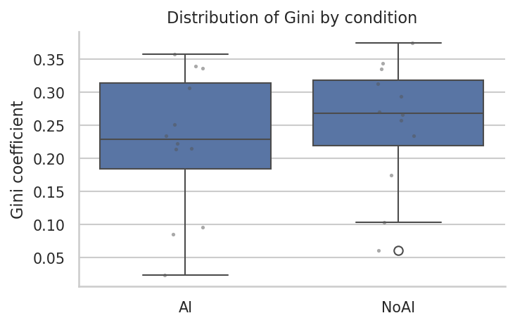
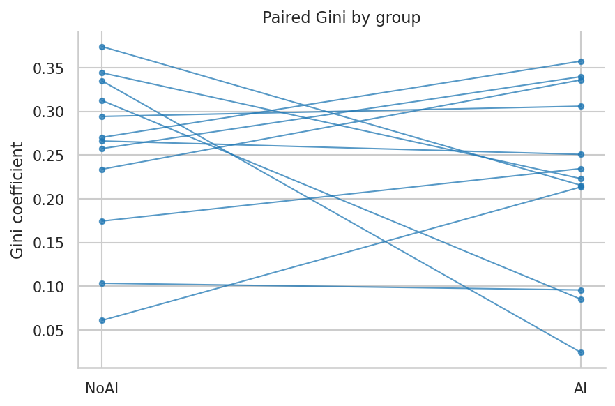
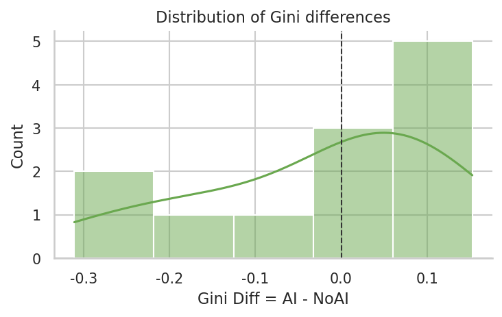
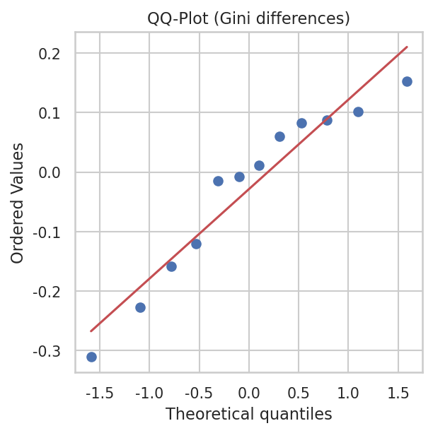
4.2 Coefficient of Variation (CV)
| Type |
mean |
sd |
n |
| AI |
0.536275 |
0.269069 |
12 |
| NoAI |
0.613585 |
0.237120 |
12 |
| test |
stat |
p |
mean_diff |
ci_lo |
ci_hi |
dz |
dz_ci_lo |
dz_ci_hi |
n |
| t-test |
-0.723752 |
0.484325 |
-0.077309 |
-0.312412 |
0.157794 |
-0.208929 |
-0.771694 |
0.445693 |
12 |
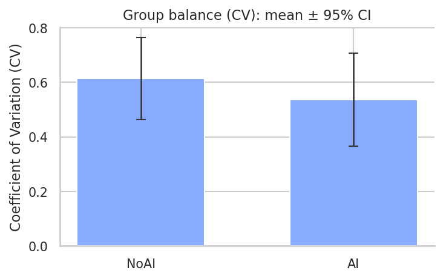
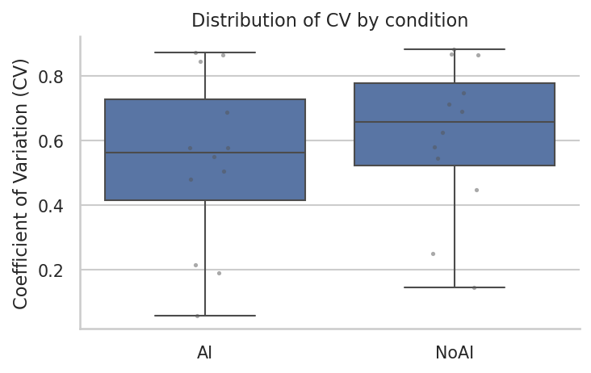
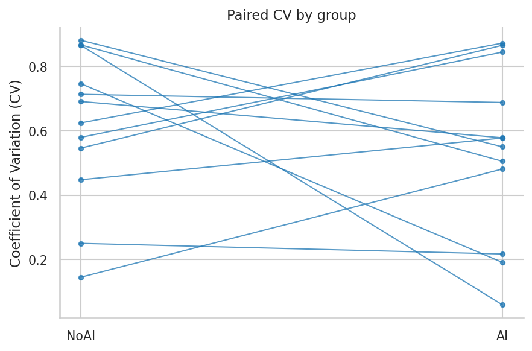
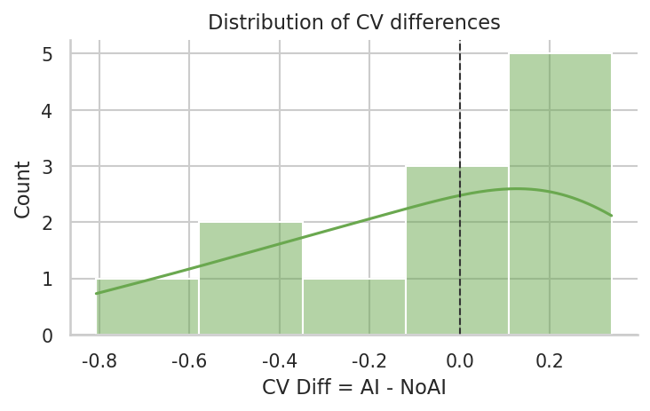
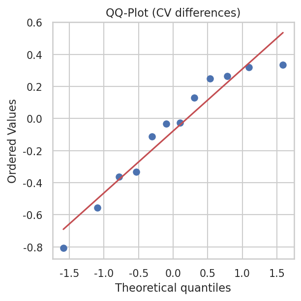
Auto-generated. Confidence level 95%, bootstrap 10000 iterations.